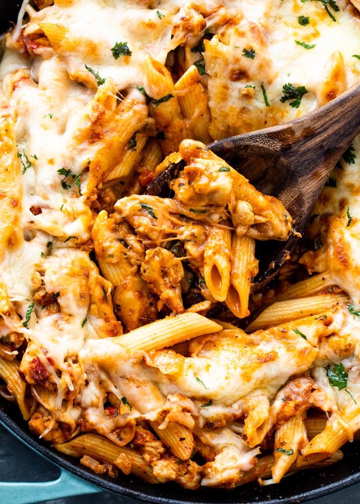

Odin Recipes
Chicken Pasta

Description
Easy to cook chicken pasta with garlic tomato sauce topped with cheese.
Ingredients
- 2 chicken breasts cut in strips
- 1 tablespoon olive oil
- 1/2 onion chopped
- 1/2 bell pepper chopped
- 3 cloves of garlic minced
- 1/2 teaspoon of salt, pepper and garlic powder
- 1 cup marinara sauce
- 1/2 cup of mozzarella
- 1/4 cup of Parmesan cheese
- 1.5 cups dry pasta
>
Steps
- Bring 2 cups of salted water to boil in saucepan. Pour pasta into water. Add teaspoon of salt. Cover and
cook for 10 minutes.
- Cut chicken breat, onions and bell pepper. Heat olive oil in a pot on medium heat. Add chopped onion and
pepper and saute until softened (2 minutes). Add garlic and saute for 30 seconds. Add chicken, salt, pepper
and garlic powder. and saute until chicken is cooked through.
- Add Marinara sauce and simmer for 5 minutes while pan is covered. Drain water and pour pasta into chicken
mixture. Mix well and add cheese with heat off. Mix the cheese in.